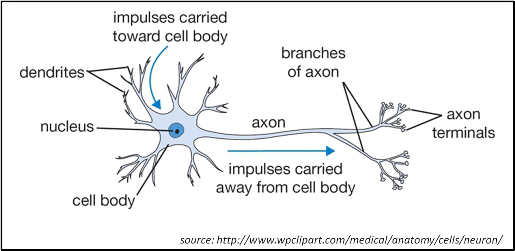
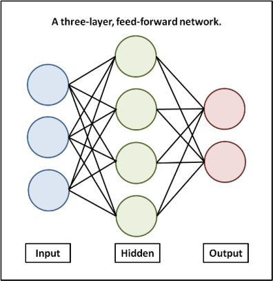
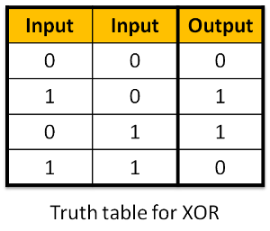
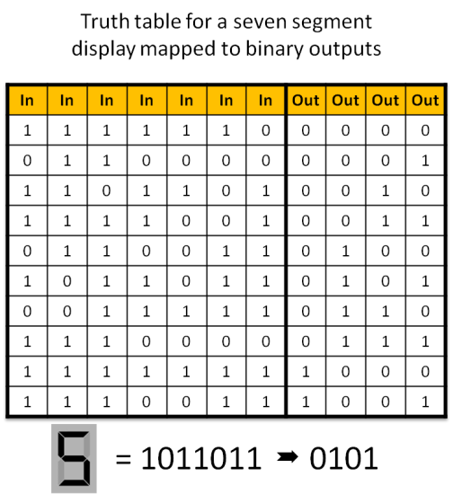
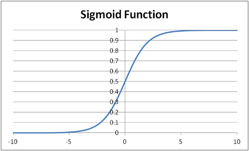

A Neural Network for Arduino
This article presents an artificial neural network developed for an Arduino Uno microcontroller board. The network described here is a feed-forward backpropagation network, which is perhaps the most common type. It is considered a good, general purpose network for either supervised or unsupervised learning. The code for the project is provided as an Arduino sketch. It is plug and play - you can upload it to an Uno and run it, and there is a section of configuration information that can be used to quickly build and train a customized network. The write-up provided here gives an overview of artificial neural networks, details of the sketch, and an introduction to some of the basic concepts employed in feed forward networks and the backpropagation algorithm.
The sketch is available for download by clicking here: ArduinoANN.zip. The code is also listed in its entirety at the end of the tutorial.
Backpropagation neural networks have been in use since the mid-1980s. The basic concepts of backpropagation are fairly straightforward and while the algorithm itself involves some higher order mathematics, it is not necessary to fully understand how the equations were derived in order to apply them. There are some challenges to implementing a network on a very small system, and on earlier generations of inexpensive microcontrollers and hobbyist boards those challenges were significant. However Arduinos, like many of today's boards, actually make pretty short work of the task. The Arduino Uno used here is based on Atmel's ATmega328 microcontroller. Its 2K of SRAM is adequate for a sample network with 7 inputs and 4 outputs, and with Arduino's GCC language support for multidimensional arrays and floating point math, the job of programming is very manageable.
So what's it good for? Neural networks learn by example. They have been used in applications that range from autonomous vehicle control, to game playing, to facial recognition, to stock market analysis. Most applications will involve some type of pattern matching where the exact input to a system won't be known and where there may be missing or extraneous information. Consider the problem of recognizing handwritten characters. The general shapes of the alphabet can be known ahead of time, but the actual input will always vary. Of course, the little network built here on an ATmega328 won't be quite up to the task of facial recognition, but there are quite a few experiments in robotic control and machine learning that would be within its grasp.
As the name implies, an artificial neural network, frequently abbreviated ANN, is a computing model inspired by nature. It is an attempt to mimic at a certain level the way a brain stores information and reacts to various inputs. In nature, the basic building block of a nervous system is a specialized type of cell called a neuron.

It might be convenient to visualize a neuron as a tiny electro-chemical switch which turns on when stimulated. Neurons are connected to one another in vast networks. When a neuron is excited by a stimulus and becomes active, it sends a small charge along this network which in turn causes other neurons in the network to become active. A neuron will have multiple neurons feeding into it and the strength of these connections will vary. If there is a strong connection from an input, it will provide a lot of stimulus; a weaker connection will provide less. In a very real sense a neuron can be thought of as adding up all of these inputs of varying strengths and producing an output based on the total.
In a software-based artificial neural network, neurons and their connections are constructed as mathematical relationships. When the software is presented with an input pattern, it feeds this pattern through the network, systematically adding up the inputs to each neuron, calculating the output for that neuron, and using that output to feed the appropriate inputs to other neurons in the network.
Determining the strength of the connections between neurons, also known as the weights, becomes the principal preoccupation in neural network application. In the backpropagation algorithm, the network is originally initialized with random weights. The network is then presented with a training set of inputs and outputs. As the inputs are fed through the system, the actual output is compared to the desired output and the error is calculated. This error is then fed back through the network and the weights are adjusted incrementally according to a learning algorithm. Over a period of many cycles, typically thousands, the network will ultimately be trained and will give the correct output when presented with an input.
In the feed-forward network we're building here, the neurons are arranged in three layers called the input, hidden, and output layers. All the neurons in one layer are connected to all the neurons in the next layer. The classic graphic representation of this relationship is pictured below.

The hidden layer plays a crucial role in a feedforward network. In early neural network models the input neurons were connected directly to the output neurons and the range of solutions that a network could achieve was extremely limited. One such problem that a two layer model could not solve was the logic of exclusive or - typically represented as XOR. In Boolean logic, an XOR relationship is one which results in true when either input is true, but when both inputs are true results in false. A truth table for XOR is pictured below.

With the addition of a layer in between the inputs and the outputs, the network is able to solve for XOR and much more. Some theories posit that with other conditions of the network being optimized, a three layer network would be able to solve for any truth table. Solving for XOR is a good litmus test for a new network. You'll see it frequently used in examples and it is often referred to as the "Hello World" program of neural networking.
The network as implemented in the sketch accompanying this article is just a demonstration and doesn't actually perform any real world function. The sketch includes a set of training inputs and outputs, and the network is trained to that set until such time as it has achieved a pre-determined level of accuracy. At that point the sketch declares victory and then restarts. Along the way the results of the training are periodically sent to the serial port which is monitored using the serial monitor of the Arduino IDE or any other terminal program. (Note that when using the Arduino IDE it will be necessary to start the serial monitor in the Tools menu after loading the sketch.)
The program has been structured such that a network and training set can be assembled very quickly by simply changing the values in a configuration section at the beginning of the sketch. This setup makes it possible to experiment with the network without necessarily understanding all of the the underlying nuance.
The configuration section includes two data arrays, Input and Target, that together makeup the truth table of the training set. For what it's worth, the training set in the sketch is a truth table that maps the seven segments of an led numeric display (0-9) to a binary number (0000 - 1001). You might think of this as a rudimentary representation of an optical character recognition problem. If you study the arrays you'll notice that they provide a rich mix in the mapping of inputs and outputs and make for a nice proof of concept that the network can learn to solve a rather difficult problem.

To modify the network to a new training set you must enter the appropriate truth table values in the Input and Target arrays, and you must also adjust the corresponding parameters in the configuration section to match the new truth table:
- PatternCount: The number of training items or rows in the truth table.
- InputNodes: The number of input neurons.
- OutputNodes: The number of output neurons.
There are several additional items that can be configured in this section for experimentation.
- HiddenNodes: The number of hidden neurons.
- LearningRate: Adjusts how much of the error is actually backpropagated.
- Momentum: Adjusts how much the results of the previous iteration affect the current iteration.
- InitialWeightMax: Sets the maximum starting value for weights.
- Success: The threshold for error at which the network will be said to have solved the training set.
As a general concept, HiddenNodes, LearningRate, Momentum and InitialWeightMax all work together to optimize the network for learning effectiveness and speed, while minimizing certain pitfalls that are encountered in neural network design.
A lower value for LearningRate results in a slower training process but reduces the likelihood of the network going into an oscillation where it continually overshoots the solution to the training problem and never achieves the success threshold. In our demo LearningRate is set at .3. For large, very complex networks (much larger than we could build on the Arduino Uno), the value is often set very low - on the order of .01.
Momentum smoothes the training process by injecting a portion of the previous backpropagation into the current backpropagation. Momentum serves to help prevent a phenomenon where the network converges on a solution which is good but not best, also known as converging on the local minimum. Momentum values need to be between 0 and 1.
The number of hidden neurons can affect the speed with which a network can be trained, the complexity of problems the network can solve, and can help to prevent converging on the local minimum. You'll want to have at least as many hidden neurons as output neurons, and you may want considerably more. The downside to a large number of hidden neurons is the large number of weights that need to be stored.
The initial randomized weights should be relatively small. The value for InitialWeightMax in the configuration provided with the sketch is .5. This will set all of the initial weights to between -.5 and .5 which is a good starting point.
The ideal values for these parameters varies greatly depending on the training data and there really is no straightforward best practice for choosing them; experience combined with trial and error seems to be the approach.
The final value in the configuration section, Success, sets the threshold level of error in the system when the training set will be considered learned. It is a very small number greater than zero. It is the nature of this type of network that the total error in the system will approach zero, but never actually reach it.
Be aware that the sample network with 7 inputs, 8 hidden neurons, and 4 outputs is about as large as you'll be able to run on the Arduino Uno's 2K SRAM. Unfortunately, there is no warning if you run out of memory on the Arduino, the behavior of the sketch will simply become erratic. The good news is that the list of Arduino and Arduino compatible systems with SRAM allocations greater than 2K is growing all the time. If you become a full-fledged neural network experimenter you'll have plenty of options to choose from.
At this point we've covered enough ground for you to copy the code for the sample network to your own computer, upload it to the Arduino, and experiment with the various settings.
Looking beyond the configuration section we now turn to the sketch itself. The basic strategy in implementing a neural network as a C program is to establish a framework of data arrays to hold the weights and to track accumulating totals as signals are fed forward and errors are fed backward through the network. A sequence of nested FOR loops iterates through these arrays making the various calculations required as the backpropagation algorithm is executed. The arrays and other variables and constants have been given names that correspond to their function in the network; those names will become more clear as you progress through the rest of the explanation.
Although the code is not at the absolute beginner level, if you have familiarity with the concepts of arrays and looping, you should hopefully be able to read through the sketch which accompanies this article and follow the logic. Here is a high level breakdown:
- Initialize the arrays. The weights are set to random numbers and two additional arrays that hold change values used in backpropagation are set to zeros.
- Begin a large loop that runs the system through a complete set of the training data.
- Randomize the order in which the training sets run on each iteration to reduce oscillation or convergence on local minimums.
- Calculate the hidden layer activations, output layer activations and errors.
- Backpropagate the errors to the hidden layer.
- Update the weights.
- If the system error is greater than the success threshold then run another iteration of the training data.
- If the system error is less than the success threshold then break, declare success, and send data to the serial terminal.
- Every 1000 cycles send the results of a test run of the training set to the serial terminal.
In addition to the programming logic, there are three fundamental concepts of the network to be understood: the activation function, gradient decent, and bias.
The activation function calculates the output of a neuron based on the sum of the weighted connections feeding into that neuron. While there are variations, this sketch uses the most common activation function which is called the Sigmoid Function because of its distinctive shape as seen in the graph below.

The critical feature of the function is that regardless of the input, the output will fall between 0 and 1. This feature is very handy in coding a neural network because the output of a neuron can always be expressed in a range between full on and full off. The activation function is seen in several places in the code where it takes the general form:
output = 1.0/(1.0 + exp(-Accum)) |
with output being the array variable representing the output of the neuron being activated and Accum being the total of the weighted inputs to that neuron. The intricacies of the specific formula are not important other than that they conveniently produce the sigmoid output.
Gradient descent is the secret sauce of backpropagation. It is a mathematical approach that enables us to calculate the magnitude of the error at each output neuron, determine how much each connection to that neuron contributed to the error, and make incremental adjustments in the weights of those connections that will systematically reduce the error.
The first step in gradient descent is to calculate a value called the delta for each neuron. The delta reflects the magnitude of the error - the greater the difference between the target value for the neuron and its actual output, the larger the delta. At the output layer the delta calculation is straightforward:
delta = (target - actual) * actual * (1 - actual) |
which is seen in the code as
OutputDelta[i] = (Target[p][i] - Output[i]) * Output[i] * (1.0 - Output[i]) ; |
Calculating the delta at the hidden layer becomes slightly more involved as there is no target to measure against. Instead, the magnitude of the error for each hidden neuron is derived from the relationship between the weights and the delta that was calculated for the output layer. For each hidden neuron, the code steps through all of the output connections multiplying the weights by the deltas and keeping a running total:
Accum += OutputWeights[i][j] * OutputDelta[j] ; |
Then the inner layer delta is then calculated by substituting the value stored in Accum for the Target[p][i] - Output[i] value in the formula seen in the first calculation which becomes:
HiddenDelta[i] = Accum * Hidden[i] * (1.0 - Hidden[i]) ; |
With the delta values for the two layers calculated, the next step is to actually work through and adjust the weights. It is here that we see how values for learning rate and momentum modify the changes to the weight. For each weight the amount to change is determined by this formula:
change = (learning rate * weight * delta) + (momentum * previous change) |
and then the new weight is found by adding the old weight to the change value:
weight = weight + change |
For the weights between the inner and hidden layers that formula appears in the code as:
ChangeHiddenWeights[j][i] = LearningRate * Input[p][j] * HiddenDelta[i] + Momentum * ChangeHiddenWeights[j][i]; HiddenWeights[j][i] += ChangeHiddenWeights[j][i] ; |
For the weights between the hidden and the output layers the formula appears in the code as:
ChangeOutputWeights[j][i] = LearningRate * Hidden[j] * OutputDelta[i] + Momentum * ChangeOutputWeights[j][i] ; OutputWeights[j][i] += ChangeOutputWeights[j][i] ; |
Lastly we come to bias, a relatively straightforward notion that can nonetheless make the code a little confusing when not understood. The input and hidden layers each contain an extra neuron that always fires (in other words it always has an implied activation of "1"). The bias value has several positive effects on the network. It adds stability and expands the number of possible solutions. Most importantly it eliminates the possibility of having all the inputs be zero and therefore having no signal propagate through the network. If you look at the declarations for the arrays which hold the weights and the change values, you'll see that extra neuron. Also, you'll see in the nested loops that handle the activation and updating functions that there are separate calculations for the bias neurons that do not rely on an input value.
With that we'll conclude the discussion of the network. If the concepts presented here were all new to you, it will undoubtedly require some continued effort to develop a satisfying understanding of how backpropagation works. There is no lack of material available related to neural networks, however much of it goes fairly deep into the mathematical theory and is not helpful to the beginner trying to grapple with the basic concepts and translate them to code.
John Bullinaria of the University of Birmingham's School of Computer Science has posted a Step by Step Guide to Implementing a Neural Network in C at www.cs.bham.ac.uk/~jxb/NN/nn.html. This guide is a particularly useful resource which I found invaluable in preparing this article.
Two additional resources that would be useful for getting started can be found at TEK271.com: http://www.tek271.com/?about=docs/neuralNet/IntoToNeuralNets.html and the Robotics Society of Southern California: http://www.rssc.org/content/introduction-neural-nets-part-1.
The complete code to accompany this tutorial appears below. Click here to download: ArduinoANN.zip
#include <math.h> /****************************************************************** * Network Configuration - customized per network ******************************************************************/ const int PatternCount = 10; const int InputNodes = 7; const int HiddenNodes = 8; const int OutputNodes = 4; const float LearningRate = 0.3; const float Momentum = 0.9; const float InitialWeightMax = 0.5; const float Success = 0.0004; const byte Input[PatternCount][InputNodes] = { { 1, 1, 1, 1, 1, 1, 0 }, // 0 { 0, 1, 1, 0, 0, 0, 0 }, // 1 { 1, 1, 0, 1, 1, 0, 1 }, // 2 { 1, 1, 1, 1, 0, 0, 1 }, // 3 { 0, 1, 1, 0, 0, 1, 1 }, // 4 { 1, 0, 1, 1, 0, 1, 1 }, // 5 { 0, 0, 1, 1, 1, 1, 1 }, // 6 { 1, 1, 1, 0, 0, 0, 0 }, // 7 { 1, 1, 1, 1, 1, 1, 1 }, // 8 { 1, 1, 1, 0, 0, 1, 1 } // 9 }; const byte Target[PatternCount][OutputNodes] = { { 0, 0, 0, 0 }, { 0, 0, 0, 1 }, { 0, 0, 1, 0 }, { 0, 0, 1, 1 }, { 0, 1, 0, 0 }, { 0, 1, 0, 1 }, { 0, 1, 1, 0 }, { 0, 1, 1, 1 }, { 1, 0, 0, 0 }, { 1, 0, 0, 1 } }; /****************************************************************** * End Network Configuration ******************************************************************/ int i, j, p, q, r; int ReportEvery1000; int RandomizedIndex[PatternCount]; long TrainingCycle; float Rando; float Error; float Accum; float Hidden[HiddenNodes]; float Output[OutputNodes]; float HiddenWeights[InputNodes+1][HiddenNodes]; float OutputWeights[HiddenNodes+1][OutputNodes]; float HiddenDelta[HiddenNodes]; float OutputDelta[OutputNodes]; float ChangeHiddenWeights[InputNodes+1][HiddenNodes]; float ChangeOutputWeights[HiddenNodes+1][OutputNodes]; void setup(){ Serial.begin(9600); randomSeed(analogRead(3)); ReportEvery1000 = 1; for( p = 0 ; p < PatternCount ; p++ ) { RandomizedIndex[p] = p ; } } void loop (){ /****************************************************************** * Initialize HiddenWeights and ChangeHiddenWeights ******************************************************************/ for( i = 0 ; i < HiddenNodes ; i++ ) { for( j = 0 ; j <= InputNodes ; j++ ) { ChangeHiddenWeights[j][i] = 0.0 ; Rando = float(random(100))/100; HiddenWeights[j][i] = 2.0 * ( Rando - 0.5 ) * InitialWeightMax ; } } /****************************************************************** * Initialize OutputWeights and ChangeOutputWeights ******************************************************************/ for( i = 0 ; i < OutputNodes ; i ++ ) { for( j = 0 ; j <= HiddenNodes ; j++ ) { ChangeOutputWeights[j][i] = 0.0 ; Rando = float(random(100))/100; OutputWeights[j][i] = 2.0 * ( Rando - 0.5 ) * InitialWeightMax ; } } Serial.println("Initial/Untrained Outputs: "); toTerminal(); /****************************************************************** * Begin training ******************************************************************/ for( TrainingCycle = 1 ; TrainingCycle < 2147483647 ; TrainingCycle++) { /****************************************************************** * Randomize order of training patterns ******************************************************************/ for( p = 0 ; p < PatternCount ; p++) { q = random(PatternCount); r = RandomizedIndex[p] ; RandomizedIndex[p] = RandomizedIndex[q] ; RandomizedIndex[q] = r ; } Error = 0.0 ; /****************************************************************** * Cycle through each training pattern in the randomized order ******************************************************************/ for( q = 0 ; q < PatternCount ; q++ ) { p = RandomizedIndex[q]; /****************************************************************** * Compute hidden layer activations ******************************************************************/ for( i = 0 ; i < HiddenNodes ; i++ ) { Accum = HiddenWeights[InputNodes][i] ; for( j = 0 ; j < InputNodes ; j++ ) { Accum += Input[p][j] * HiddenWeights[j][i] ; } Hidden[i] = 1.0/(1.0 + exp(-Accum)) ; } /****************************************************************** * Compute output layer activations and calculate errors ******************************************************************/ for( i = 0 ; i < OutputNodes ; i++ ) { Accum = OutputWeights[HiddenNodes][i] ; for( j = 0 ; j < HiddenNodes ; j++ ) { Accum += Hidden[j] * OutputWeights[j][i] ; } Output[i] = 1.0/(1.0 + exp(-Accum)) ; OutputDelta[i] = (Target[p][i] - Output[i]) * Output[i] * (1.0 - Output[i]) ; Error += 0.5 * (Target[p][i] - Output[i]) * (Target[p][i] - Output[i]) ; } /****************************************************************** * Backpropagate errors to hidden layer ******************************************************************/ for( i = 0 ; i < HiddenNodes ; i++ ) { Accum = 0.0 ; for( j = 0 ; j < OutputNodes ; j++ ) { Accum += OutputWeights[i][j] * OutputDelta[j] ; } HiddenDelta[i] = Accum * Hidden[i] * (1.0 - Hidden[i]) ; } /****************************************************************** * Update Inner-->Hidden Weights ******************************************************************/ for( i = 0 ; i < HiddenNodes ; i++ ) { ChangeHiddenWeights[InputNodes][i] = LearningRate * HiddenDelta[i] + Momentum * ChangeHiddenWeights[InputNodes][i] ; HiddenWeights[InputNodes][i] += ChangeHiddenWeights[InputNodes][i] ; for( j = 0 ; j < InputNodes ; j++ ) { ChangeHiddenWeights[j][i] = LearningRate * Input[p][j] * HiddenDelta[i] + Momentum * ChangeHiddenWeights[j][i]; HiddenWeights[j][i] += ChangeHiddenWeights[j][i] ; } } /****************************************************************** * Update Hidden-->Output Weights ******************************************************************/ for( i = 0 ; i < OutputNodes ; i ++ ) { ChangeOutputWeights[HiddenNodes][i] = LearningRate * OutputDelta[i] + Momentum * ChangeOutputWeights[HiddenNodes][i] ; OutputWeights[HiddenNodes][i] += ChangeOutputWeights[HiddenNodes][i] ; for( j = 0 ; j < HiddenNodes ; j++ ) { ChangeOutputWeights[j][i] = LearningRate * Hidden[j] * OutputDelta[i] + Momentum * ChangeOutputWeights[j][i] ; OutputWeights[j][i] += ChangeOutputWeights[j][i] ; } } } /****************************************************************** * Every 1000 cycles send data to terminal for display ******************************************************************/ ReportEvery1000 = ReportEvery1000 - 1; if (ReportEvery1000 == 0) { Serial.println(); Serial.println(); Serial.print ("TrainingCycle: "); Serial.print (TrainingCycle); Serial.print (" Error = "); Serial.println (Error, 5); toTerminal(); if (TrainingCycle==1) { ReportEvery1000 = 999; } else { ReportEvery1000 = 1000; } } /****************************************************************** * If error rate is less than pre-determined threshold then end ******************************************************************/ if( Error < Success ) break ; } Serial.println (); Serial.println(); Serial.print ("TrainingCycle: "); Serial.print (TrainingCycle); Serial.print (" Error = "); Serial.println (Error, 5); toTerminal(); Serial.println (); Serial.println (); Serial.println ("Training Set Solved! "); Serial.println ("--------"); Serial.println (); Serial.println (); ReportEvery1000 = 1; } void toTerminal() { for( p = 0 ; p < PatternCount ; p++ ) { Serial.println(); Serial.print (" Training Pattern: "); Serial.println (p); Serial.print (" Input "); for( i = 0 ; i < InputNodes ; i++ ) { Serial.print (Input[p][i], DEC); Serial.print (" "); } Serial.print (" Target "); for( i = 0 ; i < OutputNodes ; i++ ) { Serial.print (Target[p][i], DEC); Serial.print (" "); } /****************************************************************** * Compute hidden layer activations ******************************************************************/ for( i = 0 ; i < HiddenNodes ; i++ ) { Accum = HiddenWeights[InputNodes][i] ; for( j = 0 ; j < InputNodes ; j++ ) { Accum += Input[p][j] * HiddenWeights[j][i] ; } Hidden[i] = 1.0/(1.0 + exp(-Accum)) ; } /****************************************************************** * Compute output layer activations and calculate errors ******************************************************************/ for( i = 0 ; i < OutputNodes ; i++ ) { Accum = OutputWeights[HiddenNodes][i] ; for( j = 0 ; j < HiddenNodes ; j++ ) { Accum += Hidden[j] * OutputWeights[j][i] ; } Output[i] = 1.0/(1.0 + exp(-Accum)) ; } Serial.print (" Output "); for( i = 0 ; i < OutputNodes ; i++ ) { Serial.print (Output[i], 5); Serial.print (" "); } } } |
About the Author: Ralph Heymsfeld is the founder and principal of Sully Station Solutions. His interests include artificial intelligence, machine learning, robotics and embedded systems. His writings on these on other diverse topics appear regularly here and across the Internet.
Other Articles You Might Find Enjoyable
Haar LBP and HOG - Experiments in OpenCV Object Detection
I've spent some time lately coming up-to-speed and playing with OpenCV - especially the object detection routines. Three that caught my eye for further investigation were Haar Cascades, Local Binary Patterns (LBP), and Histogram of Oriented Gradients (HOG).
iCE40 and the IceStorm Open Source FPGA Workflow
Project IceStorm is the first, and currently only, fully open source workflow for FPGA programming. Here, the software and hardware are discussed and a small sample project implemented.
LaunchPad MSP430 Assembly Language Tutorial
One of my more widely read tutorials. Uses the Texas Instruments LaunchPad with its included MSP430G2231 processor to introduce MSP430 assembly language programming.
Raspberry Pi to Arduino SPI Communication
This tutorial presents a basic framework for Raspberry Pi to Arduino communication and control using SPI - the Serial Peripheral Interface bus.
Adding a Character LCD to an FPGA Project
Adding a text LCD to an FPGA project is a simple and inexpensive way to get your project talking. This post discusses interfacing an FPGA with garden-variety generic 16 character by two-line LCD.
The Antikythera Mechanism and the History of Clockwork
Discovered in an ancient shipwreck on the southern periphery of the Aegean Sea, the Antikythera Mechanism is a 2,000 year old astronomical computer. Its discovery turned conventional wisdom on its head and forced scholars to rewrite the history of ancient technology and the origins of complex clockwork devices.
The Vacuum Tube in Computer History
The vacuum tube holds a particularly significant place in the evolution of electronic computing. With the invention of the triode in 1907 and a flurry of subsequent improvements, computing pioneers finally had the means to create fully electronic digital logic circuits.
From Boole to Bits - Claude Shannon's Digital Revolution
Claude Shannon propelled computer engineering into the modern age in 1937 when he published a paper demonstrating that Boolean algebra can be applied to the design of electronic circuits to express any mathematical or logical function.
George Stibitz and the Bell Laboratories Relay Computers
In the 1940s, driven by the innovations of George Stibitz and a heritage in switching technology, Bell Telephone Laboratories produced a series of increasingly capable computers using electromagnetic relay logic circuits.
Grace Hopper - Matriarch of Programming
Grace Murray Hopper enjoyed one of the most storied careers in computing history. From the earliest days working on the Harvard Mark I, her insights and innovations helped establish the foundations for modern, user friendly computers and launched the information age.
SCELBI, Altair and the Journey to Home Computing
In the late 1960s and early 1970s a network of electronics enthusiasts galvanized around the idea of building their own computers. The hobby computers they brought to market were an entirely new class of machine that created fortunes and shaped the personal computer industry well into the twenty first century.
The Commodore VIC-20 - The Friendly Computer
Released in 1981, the Commodore VIC-20 was the best selling computer of its day. Inexpensive and user-friendly, the computer opened up the market to a new group of consumers. It was the first computer many families owned, providing the earliest exposure to computing for countless future programmers, engineers and entrepreneurs around the world.
Flexinol and other Nitinol Muscle Wires
With its unique ability to contract on demand, Muscle Wire (or more generically, shape memory actuator wire) presents many intriguing possibilities for robotics. Nitinol actuator wires are able to contract with significant force, and can be useful in many applications where a servo motor or solenoid might be considered.
Precision Flexinol Position Control Using Arduino
An approach to precision control of Flexinol contraction based on controlling the voltage in the circuit. In addition, taking advantage of the fact that the resistance of Flexinol drops predictably as it contracts, the mechanism described here uses the wire itself as a sensor in a feedback control loop.